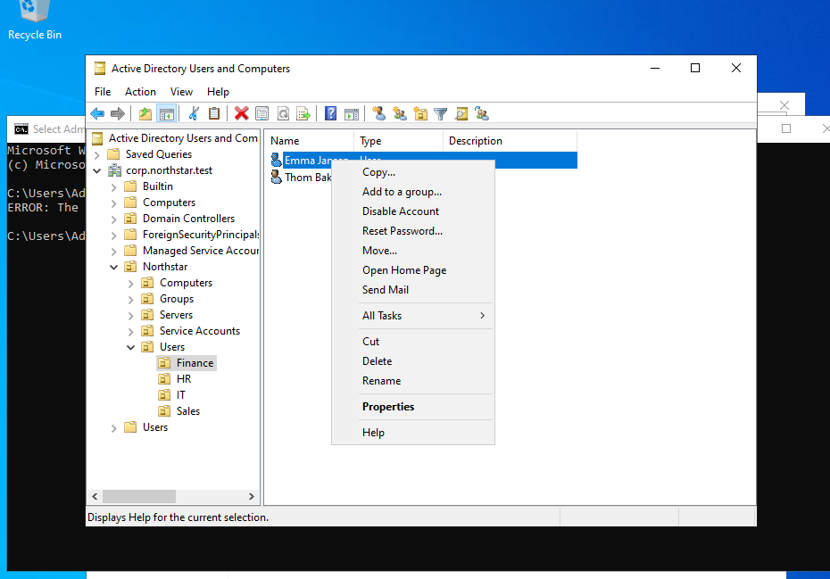
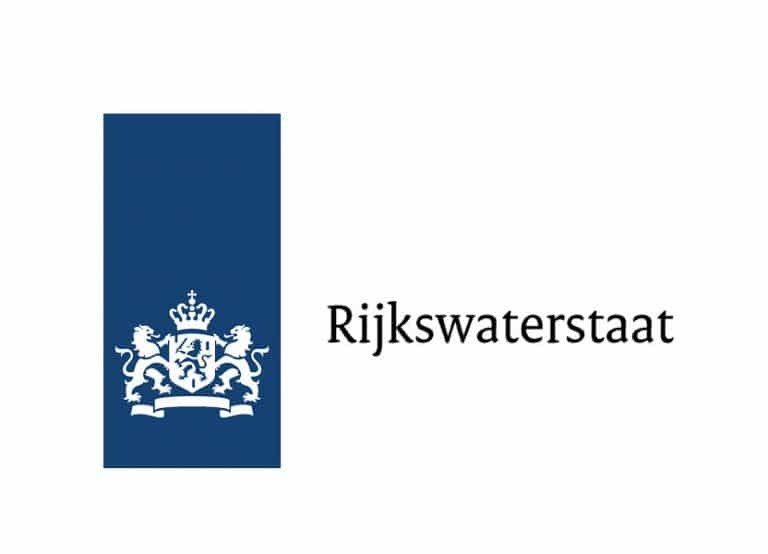
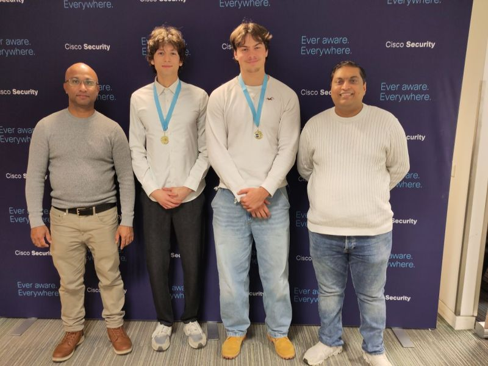

Threat hunting / Detection engineering
Cowrie & Wazuh
I built a public SSH honeypot and used Wazuh to investigate roughly 600,000 attack events collected in just over two weeks.
View project detailsCyber Security / Netherlands
I study Cyber Security at the Amsterdam University of Applied Sciences and build labs to investigate threats, write detections and assess security.
Case studies
Project archiveThreat hunting / Detection engineering
I built a public SSH honeypot and used Wazuh to investigate roughly 600,000 attack events collected in just over two weeks.
View project details
Enterprise lab / Identity security
I built a Windows domain from scratch to learn how domain services, users, groups and policies work together.
View project detailsLabs, assessments & automation
8 projects
I built custom Wazuh decoders and rules to turn Cowrie logs into alerts indexed in OpenSearch. Reconstructing a session showed how much context an alert label can miss. I’m extending the lab with threat intelligence and new detections.
Read the case study on MediumI designed an enterprise-style Windows environment and configured domain services, users, groups and policies to study how identity and access are managed.
Read the case study on MediumI used PowerShell to collect Windows build inventories and Microsoft lifecycle data, then sent the records to Splunk through HTTP Event Collector. SPL matches builds to lifecycle entries and dashboards flag unsupported systems for recurring compliance reports.
I set up isolated VirtualBox machines for simulation, target and monitoring roles. Using Wazuh for central monitoring, I compared activity from controlled simulations with the events and alerts recorded in the SIEM.
I assessed an intentionally vulnerable web application in a controlled lab. The scope included injection, cross-site scripting, insecure direct object references and authentication weaknesses. I reported the impact and possible fixes.
I reviewed Windows privilege boundaries in a grey-box assessment for a fictional organisation. My report mapped the findings to their risks and prioritised remediation.
I studied command-and-control behaviour and the defensive implications of remote administration in an isolated Python lab.
I ran controlled lab demonstrations to study how man-in-the-middle activity, DNS spoofing and denial-of-service affect network traffic and how to detect and mitigate them.
About me
I came to security through software development. Today I build controlled environments to understand how systems fail and what defenders can see. I’m particularly interested in incident response, threat intelligence, Windows and identity security. Outside my studies, I take part in various sports.

Feb–Jul 2027 · Incoming
Cyber Security Graduation Internship, scheduled to start on .
2024–2025
Software Developer. Built and maintained client websites, stores and portfolios with JavaScript, PHP, WordPress, React and Vue.
2025–Jul 2027 · Expected
Amsterdam University of Applied Sciences (HvA)
2023–2025
ROC Mondriaan · Graduated in 2025
Competition & credentials
My team used Splunk to investigate realistic security scenarios. We were invited to compete at EMEA Boss of the SOC on .
View the LinkedIn post
Cisco / 2026
INE Security / 2026
Contact
I’m exploring graduate and entry-level roles in security operations, detection engineering and security engineering from July 2027.